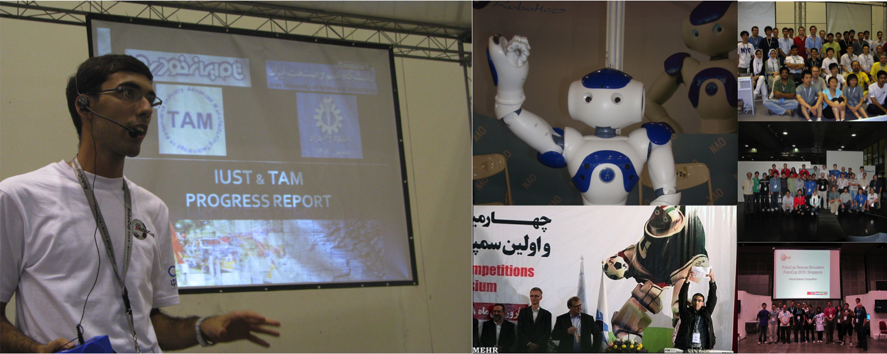
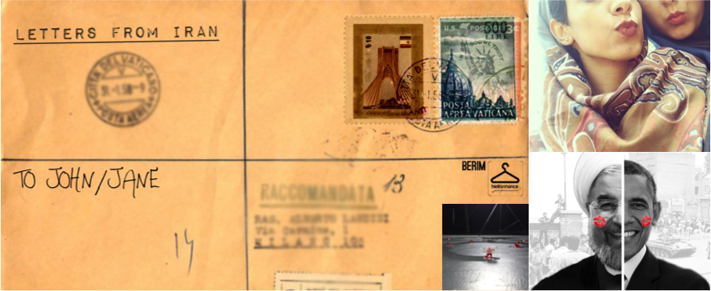

From mid-2008 until late 2014 I contributed to several robotics projects. These contributions started with participation in International RoboCup competitions in 2008 and 2009 and later as techincal commitee member in these competitions until 2012. During this period I contributed to USARSim project and several other robotic projects at Iran University of Science and technology and later at University of Edinburgh. I completed my bachelor thesis under supervision of Dr. Subramanian Ramamoorthy in Multirobot systems. I continued my masters at university of Pittsburgh on a joint project with CMU focused on analysis of multi agent systems from user analysis point of view.
From late 2012 I became interested in Machine Learning and statistical Learning methods. I attended Machine Learning Summer School in 2012 with a grant from ESPRC. I also completed to successfull intenrships at Amazon in Seattle and Berlin as Machine Learning Scientist. Both projects were under supervision of Ralf Herbrich and mentored by Dominique Perrault-Joncas and Matthias Seeger respectively.

During late 2014 Nima Dehghani and I worked on a series of projects focused on internet social media and its influence. The projects were in form of an online art work and focused mainly on political issues related Iran. These projectes recieved overshelming support and positive feed back and noticed by several news agencies such as BBC. Netformance is the initiative under which all these projects have been completed.